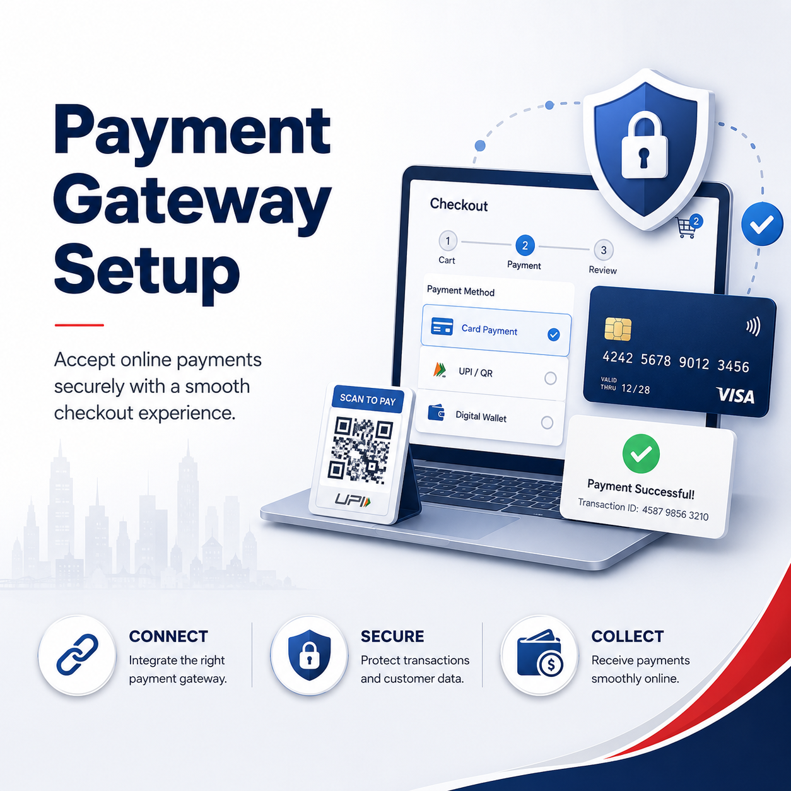

Where payment will happen
WordPress, WooCommerce, Shopify, Wix, custom website, booking form, portal or invoice workflow.
When you say “I want to integrate payment gateway”, the real need is usually to let customers pay online through a website, booking form, invoice, shop or customer portal.

WordPress, WooCommerce, Shopify, Wix, custom website, booking form, portal or invoice workflow.
Stripe, PayPal, PayNow instructions, cards, bank transfer, invoice links or other business payment flows.
Products, deposits, bookings, subscriptions, invoices, service fees or membership payments.
SSL, success pages, failed payments, confirmation email, admin alerts and handover testing.
Axon helps choose the practical setup first, then connects and tests the gateway so staff know how to manage real payments.